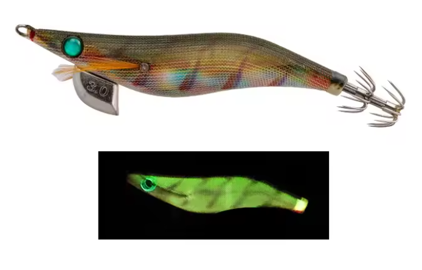

Egis Low Cost
Inicio
Señuelos
YAMASHITA
DTD
YO-ZURI
LETOYO
KINGDOM
SQUID KING
OTROS
Componentes
Color Egis
Acerca de
Yamashita Egi Sutte R/BOL – Análisis completo

🌿 Patrón natural oliva con glow verde interno, discreto y muy efectivo.
🎨 Características
Color base:
Marrón oliva natural con efecto translúcido.
Ojos:
Ojo verde, integrado y poco agresivo.
Glow:
Glow verde interno, visible sin resultar artificial.
Serie R:
Sutte reactivo con enfoque técnico y controlado.
Acabado:
Tela natural con reflejos suaves tipo baitfish.
🌙 Condiciones ideales de uso
🌊
Aguas claras:
Muy alta eficacia.
💡
Puertos iluminados:
Excelente comportamiento.
🌙
Noches con luna:
Color muy equilibrado.
🦑
Calamares recelosos:
Uno de sus mejores escenarios.
🧠 Comportamiento esperado
👉 Egi de confianza, no intrusivo.
👉 Ideal tras probar colores agresivos.
👉 Mantiene interés sin espantar.
👉 Muy bueno para pesca técnica y pausada.
⚙️ Resumen práctico
Condición
Eficiencia
🌊 Agua clara
🟢🟢 Muy alta
💡 Puerto iluminado
🟢🟢 Muy alta
🌙 Noche con luna
🟢 Alta
🦑 Calamar receloso
🟢🟢 Muy alta
🌊 Agua muy tomada
🟡 Media